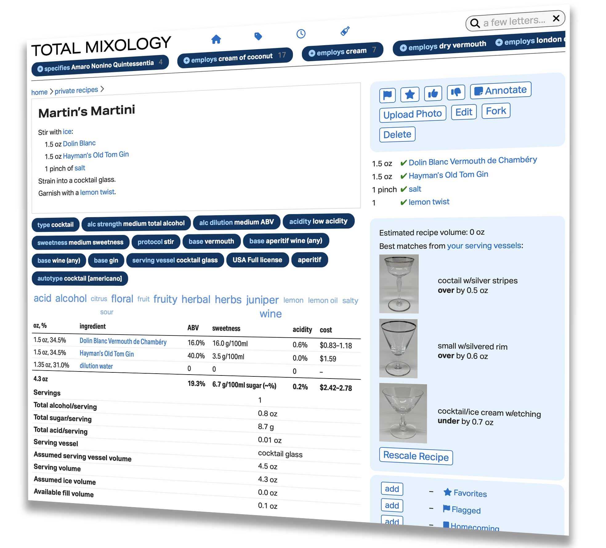

Next generation database for mixed drinks
Indulge your interest in craft cocktails
Total Mixology is your new first stop on any research journey, a place to powerfully organize your own recipes, and a set of tools to raise your game.
These are the recipes you are looking for, and a fresh perspective
Our recipe library isn’t just large, it’s great: curated, keyworded, analyzed, contextualized, annotated. Total Mixology brings an academically-inclined, rigorous eye to historical and contemporary sources, complete with (gasp!) citations*. Meet your curators:
- [pic]
Martin Doudoroff
General curator & customer support - [pic]
Robert Simonson
Contemporary drinks - [pic]
Jeff “Beachbum” Berry
Exotic drinks - [pic]
David Wondrich
Historical research
*We’re actually making all your old and new cocktail books much more useful.
Your personal recipe database
It’s easy to bookmark recipes in lists for future reference, add your own annotations, and even add your own recipes and specs to a private recipe book. Your private recipes aren’t just another notepad: they enjoy the full power of the database that makes our master recipe library so good.
When it’s time to actually mix a drink, we’re a help
Just like our popular iPhone apps, Total Mixology will help you find the drinks you can make with the ingredients you have on hand, but we’ll also do the math for you to rescale recipes for servings and serving sizes. And when you want to get really serious about a drink, you can craft your own spec for your own glassware, and even attach a photo for future reference.
Entertain!
Those lists we mentioned above are a great way to plan out a drink menu for a gathering, whether large or small. They’ll even tally up all the ingredients and quantities you’ll need for the drinks you anticipate serving. We’ll even give you the text for your menu you can gussy up in your favorite word processor, and a cheat sheet for your own use at the bar.
Love and integrity
No ads, no “SEO”, no sponsors, no “engagement”, no emoting by random people, no bullshit. Instead, you get personal support and a quality service that is cool like the Internet was gonna be, once upon a time.
Create a free, no-obligation account and explore Total Mixology in demo mode. If you like what you see, a subscription is just US$18/quarter ($6/month).